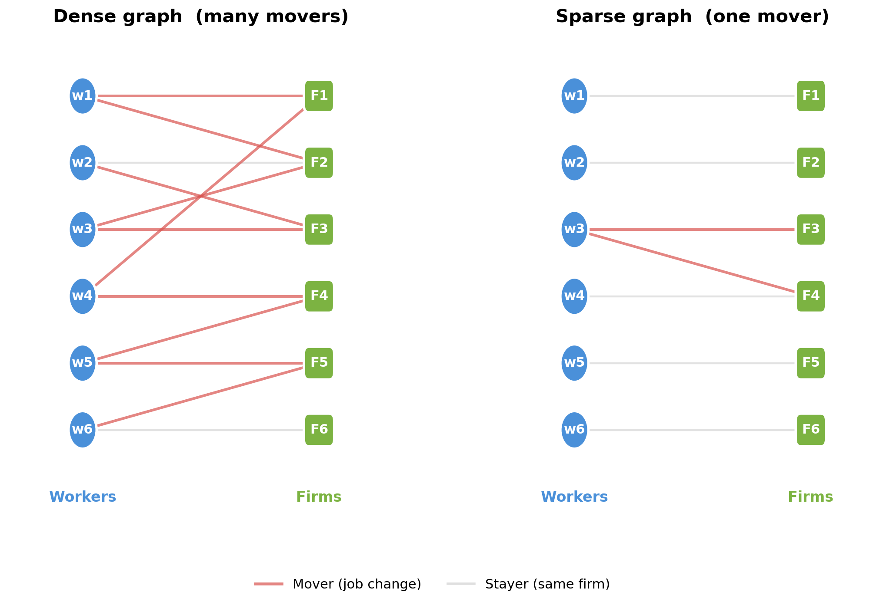
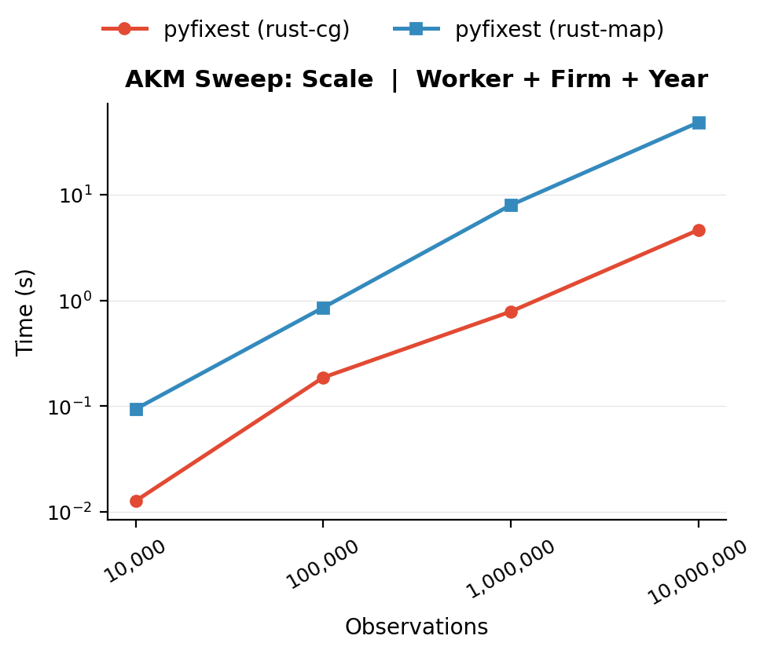
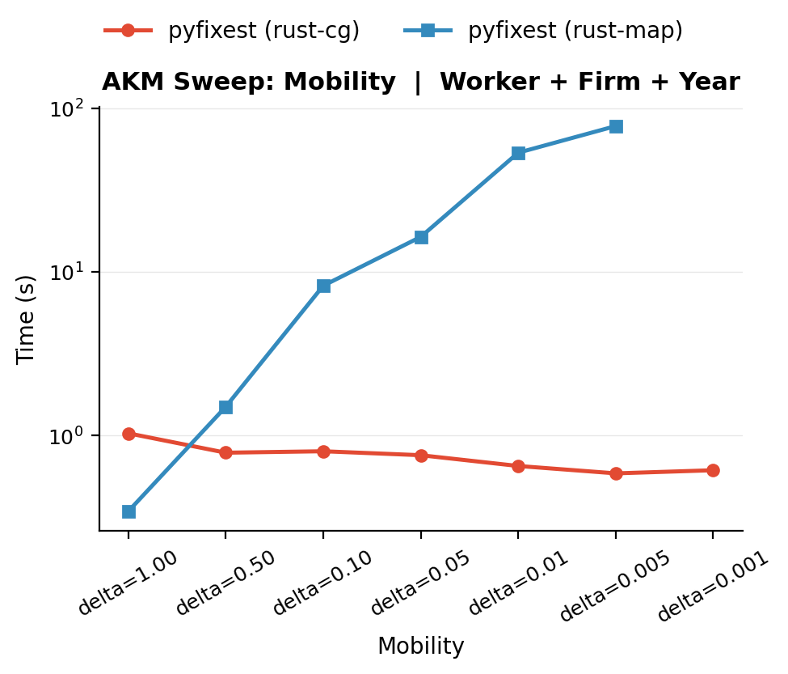
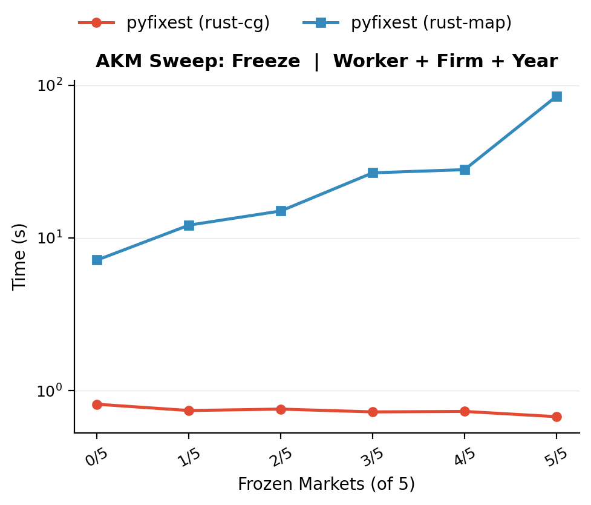
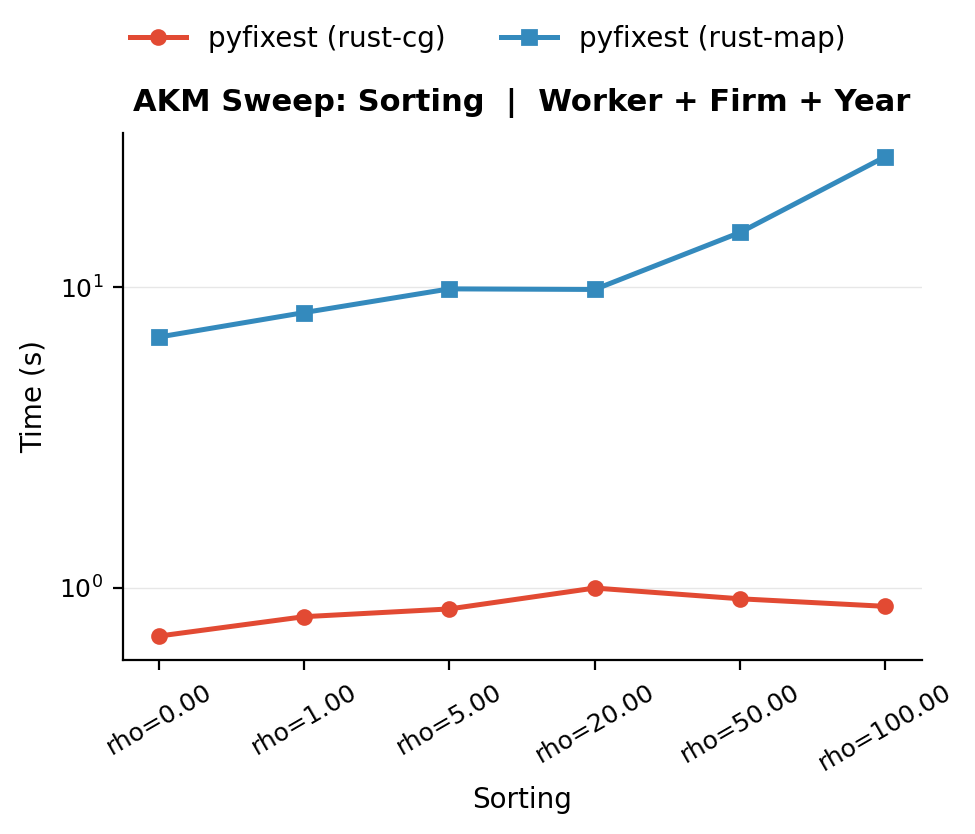
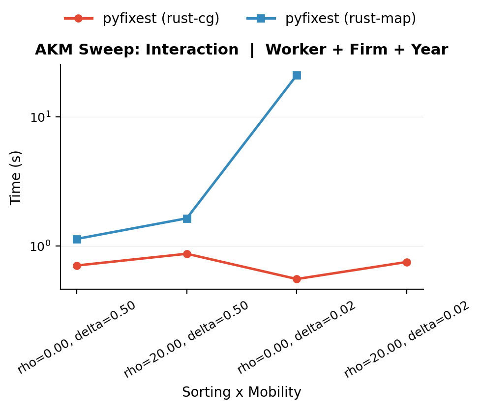
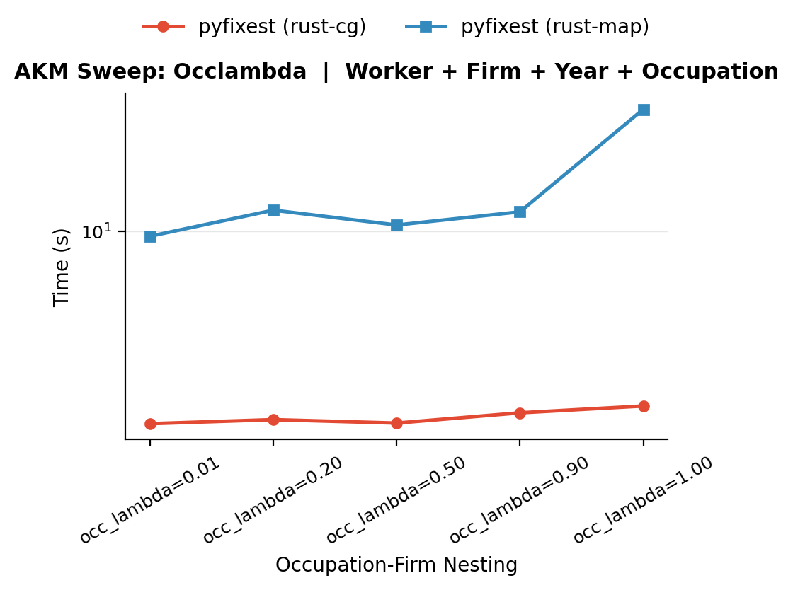
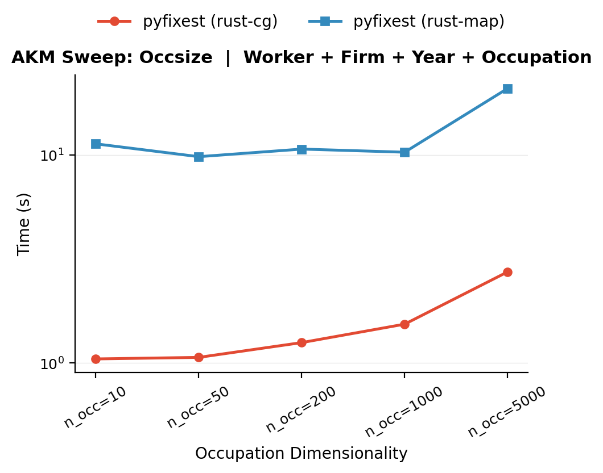
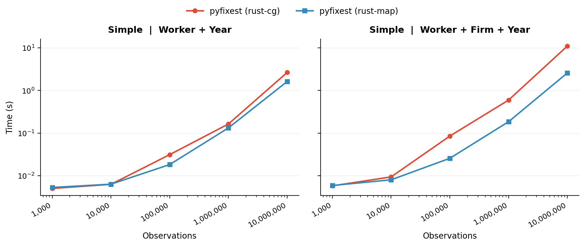
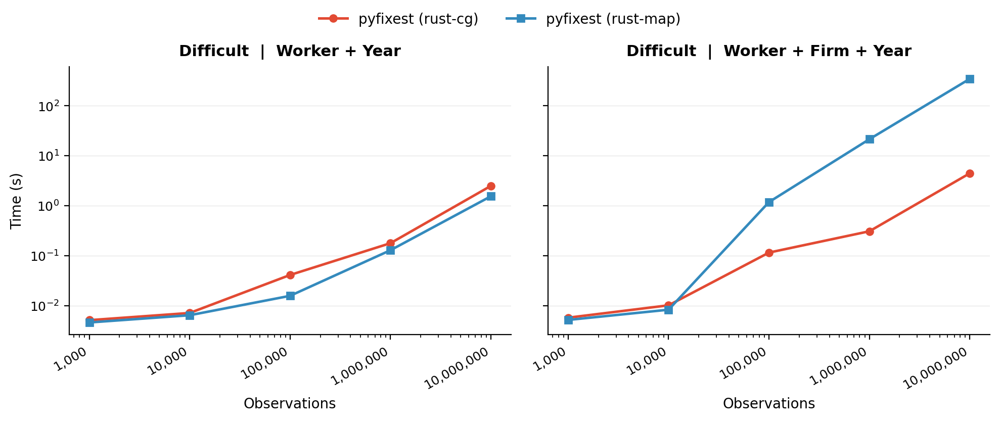

“When Are Fixed Effects Estimations Difficult?”
If you have ever fitted a fixed effects regression, you might have noticed that models with the same number of observations and fixed effects levels can take orders of magnitude longer to run. This happens because the runtime of a fixed effects problem is not only determined by the sheer size of the data, but also by the structure of the fixed effects. Problems that are known to be particularly “hard” are ubiquitous in economics and arise, for example, in matched employer-employee data, patient-doctor panels, or trade networks.
In this guide, we explain why some fixed effects problems are harder to estimate than others, and benchmark different strategies to fit fixed effects regressions in a range of scenarios.
The key insight is that fixed-effects estimation is a graph problem: the structure of who-works-where (or who-sees-which-doctor which-brand-in-which-store) determines how hard the problem is. After reading this guide, you should (hopefully) have a good idea if your fixed effects structure at hand is “difficult” and if you can speed up your own fixed effects problem by choosing a different solver.
Fixed Effects as a Network
As our workhorse example throughout this entire vignette, we will consider the Abowd-Kramarz-Margolis (AKM) wage model with worker fixed effects \(\alpha_i\), firm fixed effects \(\psi_{J(i,t)}\) and time fixed effects \(\phi_t\).
\[y_{it} = \alpha_i + \psi_{J(i,t)} + \phi_t + x'_{it}\beta + \varepsilon_{it}\]
Workers and firms form a bipartite graph: workers are one set of nodes, firms are the other, and each employment spell is an edge. Movers - workers who change firms - are the workers whose edges connect different parts of the graph. Without movers, worker and firm effects are not separately identified.

A dense graph (left) has many movers connecting all firms, making worker and firm effects easy to separate. A sparse graph (right) has a single mover bridging two clusters - demeaning must propagate information through that thin bridge, which is slow.
This bipartite structure is ubiquitous in applied economics. In AKM wage decompositions, workers and firms are the two sides of the graph, and job changers are the movers that connect them. The same pattern arises in mover designs, where families / students move across schools or neighborhoods. In health economics, we have problems of similar structure with doctor-patient fixed effects. And in trade and industrial organisation, products or brands might be sold across multiple markets and in different stores.
In all these settings, estimation requires solving the same underlying linear algebra problem, which we introduce in the following section.
From FWL to Demeaning
Before we dive into algorithmic strategies for solving fixed effect problems, we first want to (re-) introduce the Frisch-Waugh-Lovell (FWL) theorem: in a regression of \(y\) on covariates \(X\) and a set of dummy variables \(D\) (the fixed effects), the coefficient \(\hat{\beta}\) on \(X\) is identical when we either estimate the full model, or first regress \(y\) and each column of \(X\) on \(D\), collect the resulting regression residuals, and fit a final regression of the residuals of \(Y\) on the residuals of \(X\).
Fitting the two initial regression and forming a residual is often referred to as a demeaning step.
In short, we need to fit / solve a linear system of equations
\[ \hat{\alpha} = \arg\min_{\alpha} \| D\alpha - \mu \|_2^2 \]
where \(\mu\) is either \(Y\) or a column of \(X\) and \(\alpha\) are the fixed effect coefficients.
For a single fixed effect (e.g., only worker FEs), this demeaning step is trivial: \(D\) is a single one-hot encoded matrix and the least-squares solution is simply the vector of group means. Subtracting these means from \(\mu\) gives the residual - this is the classical “within transformation” from panel econometrics, and it can be computed in a single pass over the data. In other words, we have a “closed form solution” and no iteration is needed.
With two or more fixed effects, \(D = [D_W \; D_F \; \ldots]\) is a concatenation of multiple dummy matrices and the within transformation for a single fixed effect no longer suffices. To see why, consider worker and firm fixed effects. Subtracting worker means removes variation between workers, but if a worker is employed at more than one firm, her worker mean is a mixture of outcomes at different firms. The residual after demeaning by worker therefore still carries information about firm effects - it is “contaminated” by firm variation. The same logic applies in reverse: demeaning by firm leaves traces of worker effects whenever a firm employs more than one worker.
Special data structures form an exception. Suppose we have a fully balanced panel, where every worker is observed at every firm exactly once. Then each worker mean is computed over the same set of firms, and each firm mean is computed over the same set of workers. As a result, demeaning by worker removes the worker-specific component while subtracting the same average firm effect for everyone. It therefore does not leave behind a worker-specific mixture of firm effects. A second demeaning step by firm then removes the remaining firm-specific component exactly. In this special case, a simple two-step procedure (double demeaning) is sufficient. This is also the idea behind the Mundlak (1978) transform used in duckreg.
In practice, however, panels are almost never balanced. Workers are observed only at a subset of firms, so different worker means contain different mixtures of firm effects, and different firm means contain different mixtures of worker effects. Removing one set of means therefore does not cleanly isolate the other. This is why, in unbalanced settings, no simple closed-form demeaning formula is available and specialised iterative algorithms are needed.
Algorithms for Demeaning
Several algorithms have been proposed for this multi-fixed effect demeaning problem:
Method of Alternating Projections (MAP). Introduced by Guimarães & Portugal (2010) as the “Zig-Zag” and Gaure (2013), this is the workhorse algorithm in most FE packages (
reghdfe,lfe,fixest). It sequentially sweeps through each fixed effect and demeans the target variable by the current fixed effects’s group means. Usually, this approach is implemented with accelerations. For example, R’sfixestuses MAP with Irons-Tuck acceleration and other optimization strategies. In PyFixest, the"rust"backend implements MAP without acceleration and is therefore quite a lot slower thanfixest’s algorithm in cases where the accelerations pay off.LSMR. The solver powering
FixedEffectsModels.jl. It can be accessed inpyfixestvia thescipyandcupydemeaner backends.CG-Schwarz (Conjugate Gradients with Additive Schwarz Preconditioner). The
withincrate, used by PyFixest’s"rust-cg"backend, takes a different approach: it explicitly builds and exploits the block structure of the normal equations to form a high-quality preconditioner for the linear problem. We explain this structure below.
The Normal Equations and Their Block Structure
Removing the fixed effects in the first two steps of the FWL procedure reduces to solving a linear system. In particular, the fixed-effect coefficients satisfy the normal equations
\[G \, \hat{\alpha} = D^\top \mu\]
where \(D\) is the \(n \times m\) dummy matrix that encodes all FE levels and \(G = D^\top D\) is the Gramian - a symmetric positive semi-definite matrix of dimension \(m \times m\), where \(m\) is the total number of FE levels across all fixed effects.
For fixed effects problems, the Gramian \(G\) has a natural block structure. To illustrate this, we will consider a small example (adapted from the within documentation) of a worker-firm panel with \(n = 6\) observations and \(Q = 3\) fixed effects (worker, firm, year). Worker W1 moves from Firm F1 to F2 - this mobility is what connects the two firms in the estimation graph. Workers W2 (at F1) and W3 (at F2) stay at their firms.
| Obs | Worker | Firm | Year | \(y\) |
|---|---|---|---|---|
| 1 | W1 | F1 | Y1 | 3.2 |
| 2 | W1 | F2 | Y2 | 4.1 |
| 3 | W2 | F1 | Y1 | 2.8 |
| 4 | W2 | F1 | Y2 | 3.9 |
| 5 | W3 | F2 | Y1 | 5.0 |
| 6 | W3 | F2 | Y2 | 4.5 |
Fixed Effect 1 (workers) has \(m_1 = 3\) levels, fixed effect 2 (firms) has \(m_2 = 2\) levels, fixed effect 3 (years) has \(m_3 = 2\) levels, giving \(m = 7\) total FE levels. The Gramian has \(Q = 3\) diagonal blocks and \(\binom{3}{2} = 3\) cross-tabulation blocks:
\[ G = \begin{pmatrix} \mathbf{G_{WW}} & G_{WF} & G_{WY} \\ G_{WF}^\top & \mathbf{G_{FF}} & G_{FY} \\ G_{WY}^\top & G_{FY}^\top & \mathbf{G_{YY}} \end{pmatrix} = \begin{pmatrix} \mathbf{2} & \mathbf{0} & \mathbf{0} & 1 & 1 & 1 & 1 \\ \mathbf{0} & \mathbf{2} & \mathbf{0} & 2 & 0 & 1 & 1 \\ \mathbf{0} & \mathbf{0} & \mathbf{2} & 0 & 2 & 1 & 1 \\ 1 & 2 & 0 & \mathbf{3} & \mathbf{0} & 2 & 1 \\ 1 & 0 & 2 & \mathbf{0} & \mathbf{3} & 1 & 2 \\ 1 & 1 & 1 & 2 & 1 & \mathbf{3} & \mathbf{0} \\ 1 & 1 & 1 & 1 & 2 & \mathbf{0} & \mathbf{3} \end{pmatrix} \]
The diagonal blocks \(G_{WW}\), \(G_{FF}\), \(G_{YY}\) are each diagonal matrices whose entries are the group counts (how many observations belong to each worker, firm, or year). We note that inverting these blocks is computationally cheap because it amounts to dividing by group sizes, i.e., computing group means.
The cross-tabulation blocks \(G_{WF}\), \(G_{WY}\), \(G_{FY}\) encode the bipartite graph structure. For example, \(G_{WF} = D_W^\top D_F\) is the worker-firm cross-tabulation: entry \((i, j)\) counts how many times worker \(i\) is observed at firm \(j\). This is where the mover information lives. Worker W1’s row in \(G_{WF}\) is \((1, 1)\) while W2’s row is \((2, 0)\). In other words, W1 works in both firms, while W2 works in F1 in both periods. In a labour market with little mobility, the off-diagonal blocks will be sparse as most workers stay within a single firm.
The Method of Alternating Projections
Recall that we need to solve \(G \hat{\alpha} = D^\top \mu\) for the FE coefficients \(\hat{\alpha}\), or equivalently, find the residual \(r = \mu - D \hat{\alpha}\) that has all fixed effects projected out. The method of alternating projections (MAP) approaches this iteratively: it sweeps through each fixed effect and subtracts group means from the current residual. In terms of the Gramian, this is block Gauss-Seidel - each sweep solves one diagonal block of \(G\) at a time. Writing \(D_W, D_F, D_Y\) for the \(n \times m_q\) dummy sub-matrices (column blocks of \(D\)), the steps are:
- Start with \(r = y\)
- Subtract worker means from \(r\): \(r \leftarrow r - D_W G_{WW}^{-1} D_W^\top r\)
- Subtract firm means from \(r\): \(r \leftarrow r - D_F G_{FF}^{-1} D_F^\top r\)
- Subtract year means from \(r\): \(r \leftarrow r - D_Y G_{YY}^{-1} D_Y^\top r\)
- Repeat steps 2-4 until convergence
Each of these steps is individually cheap because \(G_{WW}\), \(G_{FF}\), \(G_{YY}\) are diagonal matrices and therefore not difficult to invert.
We also note that the MAP algorithm never directly touches the cross-tabulation blocks \(G_{WF}\), \(G_{FY}\), \(G_{WY}\). It can only extract information about the relationship between workers and firms indirectly, through the residuals that get passed from one sweep to the next.
Why does convergence depend on the graph? The alternating demeaning algorithm works by passing information back and forth between worker and firm effects. In the worker-mean step, each worker mean is computed over the firms at which that worker is observed. If many workers move across firms, each worker mean averages over several firm effects, so no single firm dominates that average. Subtracting worker means then removes mainly the worker-specific component while leaving a residual that still contains useful information about firms. The subsequent firm-mean step can exploit that information, and the algorithm makes substantial progress from one iteration to the next.
In the case of balanced panels, this transmission is perfect: every worker is observed at every firm, so each worker mean averages over the same set of firms, and each firm mean averages over the same set of workers. A single pass by worker and then by firm is therefore enough.
If a worker never changes firms, demeaning by worker uses only data from that one firm. The resulting residual therefore gives the next firm-demeaning step almost no information about how that firm differs from other firms. Symmetrically, demeaning by firm may give the next worker-demeaning step almost no information about workers connected to other firms. Hence each iteration changes the estimates only a little, which is why convergence is slow.
How the CGS algorithm in within works
The within crate takes a different route. Rather than repeatedly demeaning by one fixed effect at a time, it treats residualization as the sparse linear-algebra problem introduced above. For each target vector \(\mu\) - the dependent variable \(y\) or one of the covariates to be partialled out - it solves
\[ G \, \hat{\alpha} = D^\top \mu. \]
This is especially appealing in the FWL setting because the matrix \(G\) is the same for \(y\) and for every column of \(X\); only the right-hand side changes. The key computational question is therefore not whether we can write down the system, but how to solve it quickly.
This sparse linear system can be solved with different solvers, e.g. the conjugate gradient (CG) method.
The main idea behind within is to build a good preconditioner \(M\) for this large sparse system. The matrix \(M\) is chosen so that it is cheap to invert and so that the preconditioned system \(M^{-1} G x = M^{-1} b\) is much better conditioned than the original one. A good preconditioner therefore reduces the number of iterations needed by CG.
For a three-way fixed effects model with worker, firm, and year effects, within decomposes the problem into the three pairwise interactions: worker-firm, worker-year, and firm-year. This turns the original large tripartite problem into three bipartite subproblems. As we have explained above, each subproblem has a highly structured Gramian: the diagonal blocks are simple count matrices (for example, worker counts and firm counts in the worker-firm case), while the off-diagonal blocks record the cross-tabulation between the two sets of fixed effects. In the worker-firm block, for instance, entry \((i,j)\) counts how often worker \(i\) is observed at firm \(j\).
This special bipartite structure allows within to use fast approximate solvers for the pairwise graph problems. These local solves are then assembled into a Schwarz preconditioner for the full system. Finally, within applies a standard Krylov method - by default, CG - to the original normal equations, but now with this preconditioner.
Compared with MAP, the important difference is that CG-Schwarz uses the block structure of the full Gramian \(G\) directly, rather than waiting for information to trickle indirectly through many demeaning sweeps. This is why it is much less sensitive to sparse mobility patterns, as we will show in the benchmarks below.
You can find a detailed exposition of the algorithm here.
When do MAP and CGS look good / bad?
Here is some first-order intuition:
MAP looks good on dense graphs. When the graph is well-connected with many movers and no fragmentation, the vanilla MAP algorithm converges in a handful of iterations. Each sweep is extremely cheap because it only computes group means / only has to invert diagonal matrices, so the total cost per MAP iteration is low. The CG algorithm instead has overhead from forming the preconditioner, which might not amortize for dense graphs.
CG-Schwarz looks good on sparse graphs. When the graph has few movers, MAP’s convergence stalls because it cannot propagate information across thin bridges. CG uses the cross-tabulation blocks directly, so it does not suffer from this bottleneck. The overhead of building \(G\) is repaid by needing fewer iterations.
An important “failing” case for the CGS algorithm is when the problem has a pair of fixed effects that is “dense” and where both fixed effects have high cardinality - for example, worker and firm fixed effects where each worker works in each firm once or large \(N\) and large \(T\) panels. One example with benchmark for a dgp that is difficult for CGS is provided at the very end.
The intuition above is deliberately simplified. In practice, fixed-point accelerations can significantly speed up MAP convergence, narrowing the gap on moderately sparse graphs.
The following benchmarks test two PyFixest backends:
pyfixest (rust-map)implements MAP without acceleration,pyfixest (rust-cg)implements the CG-Schwarz strategy viawithin’s solver.
All benchmarks time the full PyFixest estimation call.
The benchmark scripts and DGP documentation live in benchmarks/modular/. You should be able to reproduce all results by running pixi r benchmark, pixi r benchmark-akm and pixi run benchmark-akm-occupation - if not, please send us a message!
Benchmark Parametrization
We now introduce our baseline benchmark parametrization. All subsequent benchmarks start from these defaults and vary one parameter at a time.
| Parameter | Symbol | Default | Meaning |
|---|---|---|---|
| Panel length | \(T\) | 10 | Number of time periods each worker is observed |
| Number of firms | \(m_F\) | 50,000 | Total firms in the economy |
| Separation rate | \(\delta\) | 0.10 | Per-period probability that a worker switches firms |
| Sorting | \(\rho\) | 1.0 | Correlation between worker ability and firm quality in the matching process (\(\rho = 0\): random, high \(\rho\): strong assortative matching) |
| Within-industry match prob. | \(\lambda\) | 0.80 | Probability that a mover’s next firm is in the same industry (\(\lambda = 1\): no cross-industry moves) |
| Number of industries | \(S\) | 5 | Number of industry clusters |
| Match bins | n_match_bins |
2,048 | Number of worker ability bins used in the benchmark matching routine |
| Firm size shape | \(\gamma\) | 1.0 | Pareto shape parameter for the firm size distribution (high \(\gamma\): equal sizes, low \(\gamma\): extreme dispersion) |
Well-Connected Graphs
Before looking at problems with sparse(r) connections, it is worth confirming the baseline: when the bipartite graph is dense, the MAP algorithm converges really quickly.
In this initial scenario, we hold the graph structure fixed at the defaults and - to spice up the benchmarks a bit - increase the number of workers \(N\) from 10K to 10M.

Benchmark: scale sweep. Runtime as a function of dataset size on a well-connected graph with default parameters.
On this easy problem, the standard worker + firm + year specification is solved routinely well by both algorithms because each sweep already removes most of the variation. The rust-map backend will not look this good in any other of the benchmarks to follow, which all reduce the level of connectivity between workers and firms.
Complex Fixed Effects Structures
All benchmarks below hold the estimation dataset at ~1M observations and vary one structural parameter at a time from the defaults, isolating the effect of each graph property on solver performance.
(a) Low worker mobility \(\delta\)
The separation rate \(\delta\) controls how likely a worker is to change firms in each period. With \(\delta = 0.5\), a worker has a 50% chance of switching firms every period, so after a 10-period panel nearly everyone has moved at least once. With \(\delta = 0.01\), workers separate only 1% of the time, so the expected tenure at a firm is 100 periods, which is far longer than the panel itself. In a 10-period panel with \(\delta = 0.01\), only about 9% of workers are ever observed at more than one firm.
This matters because movers are the only source of information that lets the algorithm distinguish worker effects from firm effects. When \(\delta\) is high, the bipartite graph is dense with edges and every firm is connected to many others through shared workers. When \(\delta\) is low, most workers sit at a single firm, and the graph thins out to a near-nested structure where worker and firm effects are almost collinear.

Benchmark: mobility sweep. The rust-map solver degrades sharply as mobility decreases, while CG-Schwarz (rust-cg) remains stable.
(b) Progressive freezing
The uniform mobility sweep above turns a single “global knob” for the entire labour market. But real labour markets are not uniformly sparse - some sectors are highly dynamic, while in others, workers more or less retire at their first employer. The progressive-freezing benchmark captures this by keeping the baseline 5-industry market structure and progressively switching off mobility one industry at a time. Active industries keep the baseline separation rate (\(\delta = 0.1\)), while frozen industries drop to \(\delta = 0.005\).

Benchmark: progressive freezing. As more industries switch from the baseline mobility rate (\(\delta = 0.1\)) to the frozen regime (\(\delta = 0.005\)), MAP runtimes rise progressively, while CG-Schwarz remains stable throughout.
(c) Strong assortative matching \(\rho\)
The sorting parameter \(\rho\) controls how strongly worker ability \(\alpha_i\) and firm quality \(\psi_j\) are correlated in the matching process. When \(\rho = 0\), workers are randomly assigned to firms regardless of type. When \(\rho\) is large, high-ability workers systematically sort into high-quality firms and low-ability workers end up at low-quality firms.
Strong sorting changes the structure of the bipartite graph even if the total number of movers stays the same. With random matching, movers create edges that cross the entire graph, connecting firms of all quality levels. With strong sorting, movers tend to switch between firms of similar quality, so the graph develops a near-block-diagonal structure where each “quality band” becomes an almost self-contained subgraph. The cross-tabulation blocks become sparse because there are few edges between quality bands - great workers never work in poor firms and vice versa - making worker and firm effect columns nearly collinear.

Benchmark: sorting sweep. Increasing sorting (\(\rho\)) increases MAP runtime while CGS runtime remains stable.
(d) 99 Problems
The benchmarks above vary one parameter at a time from the baseline. In practice, real datasets often combine multiple “sources of difficulty” simultaneously. The sorting \(\times\) mobility factorial benchmark tests this by crossing two levels of sorting (\(\rho \in \{0, 20\}\)) with two levels of mobility (\(\delta \in \{0.5, 0.02\}\)).

Benchmark: sorting x mobility interaction.
The combination of \(\rho = 20\) and \(\delta = 0.02\) produces runtimes far exceeding what either factor alone would predict. Sorting thins out the bridges between quality bands by making movers switch only between similar firms, while low mobility means there are few movers to begin with. Together, they produce an extremely sparse graph where MAP has almost no cross-fixed-effect information to work with.
Adding a Third Nesting Structure: Occupation Fixed Effects
The benchmarks above all involve the standard worker + firm + year specification - which essentially forms a bipartite graph between workers and firms (as year is low-dimensional and trivially absorbed). But many empirical applications add a third high-dimensional fixed effect. In AKM wage regressions, occupation is a natural candidate: labour economists often want to separate how much of a worker’s wage comes from who they are (worker FE), where they work (firm FE), and what they do (occupation FE).
Adding occupation turns the bipartite graph into a tripartite structure. The new fixed effect can be “easy” or “hard” depending on how it relates to the existing fixed effects. If occupation cross-cuts firms and workers - different occupations appear at each firm, and workers switch occupations when they move - then the occupation dimension adds independent variation and is cheap to absorb. But if occupation is nested within one of the existing fixed effects, the new fixed effects become nearly collinear with an existing set, and the problem gets harder for the same reasons we saw above: the graph loses edges and becomes more sparse.
There are two ways occupation can nest:
- Firm nesting: Each firm concentrates on a single occupation (think a law firm where everyone is a lawyer). Then knowing the firm almost perfectly predicts the occupation, and the occupation FE column is nearly a copy of the firm FE column.
- Worker nesting: Workers carry their occupation across job changes (a nurse remains a nurse regardless of which hospital they join). Then the occupation FE column is nearly a copy of the worker FE column.
In either case, the solver must separate two nearly identical columns - exactly the type of problem that makes vanilla MAP slow.
In the benchmark family below, we focus primarily on firm nesting and on the overall number of occupation levels. Worker-level occupation persistence is part of the DGP, but it is held fixed rather than swept as its own benchmark dimension.
The occupation DGP
For the occupation benchmarks, we set up a new data generating process that keeps the standard worker + firm + year AKM panel and adds occ_id as a fourth fixed effect. Each firm draws a sparse menu of occupations from an industry-level pool, with one primary occupation. Workers draw their initial occupation from that menu. On a firm move, workers keep their old occupation with probability occ_delta if the destination firm supports it; otherwise they redraw from the destination firm’s occupation menu.
Three parameters matter for the occupation DGP. The benchmark family below varies the first two and holds the third fixed:
| Parameter | Symbol | Default | Meaning |
|---|---|---|---|
| Firm–occ concentration | occ_lambda |
0.50 | Probability that a fresh draw from a firm’s occupation menu selects the primary occupation (higher values imply stronger firm–occupation concentration) |
| Number of occupations | n_occupations |
200 | Total occupation levels in the economy |
| Occupation persistence | occ_delta |
0.30 | Probability that a worker keeps the same occupation on a compatible firm move |
Each firm also has a menu size of 5 occupations. These defaults give a moderately cross-cutting baseline on top of the standard three-way AKM panel (~1M observations).
(a) Firm–occupation nesting (occ_lambda)
The parameter occ_lambda controls how strongly realized occupations at a firm concentrate on that firm’s primary occupation. At occ_lambda = 0.01, fresh draws from a firm’s menu rarely select the primary occupation, so workers are spread across the non-primary occupations in the menu. At occ_lambda = 1.0, every fresh draw from a firm’s menu selects the primary occupation, so occupation becomes much closer to a deterministic function of firm identity. Compatible movers can still carry an old non-primary occupation because occ_delta is held fixed above zero.

Benchmark: firm–occupation concentration benchmarks. This family varies only occ_lambda, making occupations progressively more nested within firms.
(b) Occupation dimensionality (n_occupations)
Increasing the number of occupation levels makes the problem harder as the occupation sub-graph thins out. With 10 occupations, each level is observed at many firms and held by many workers, so the occupation cross-tabulation blocks are dense and well-conditioned. With 5,000 occupations, each level appears in far fewer observations, and the cross-tabulation blocks become sparse. This is the same graph-thinning mechanism that makes low mobility hard, just in the occupation dimension. The bencmark varies n_occupations from 10 to 5,000 while holding all other parameters at their defaults.

Benchmark: occupation dimensionality benchmark. This family varies only the number of occupation levels from 10 to 5,000.
Conclusion
Graph connectivity is the fundamental driver of fixed-effects solver performance.
The practical recommendation is straightforward: for well-connected graphs (high mobility, low sorting, cross-cutting factors), (accelerated) MAP is often hard to beat. For sparse graphs - low mobility, strong sorting, nested structures, or any combination thereof - vanilla MAP as in rust-map reveals poor convergence properties. Within PyFixest, the CG-Schwarz backend (rust-cg via the within crate) is the more robust choice on these sparse graphs.
We conclude by showing two benchmarks from the fixest package that are designed to be simple and very challenging for the MAP algorithm. On the “simple” problem, the graph is dense and both PyFixest backends perform well; here, CG-Schwarz tends to lose because its setup overhead does not amortize. On the “difficult” sparse problem, vanilla MAP degrades sharply, while CG-Schwarz performs much better. In the checked-in results, rust-cg is substantially faster than rust-map on the hard three-way specification.

Benchmark: “simple” DGP. A well-connected graph where both PyFixest solvers perform well, except CG-Schwarz whose preconditioner setup cost does not amortize.

Benchmark: “difficult” DGP. A sparse graph where vanilla MAP degrades dramatically, while CG-Schwarz remains fast.